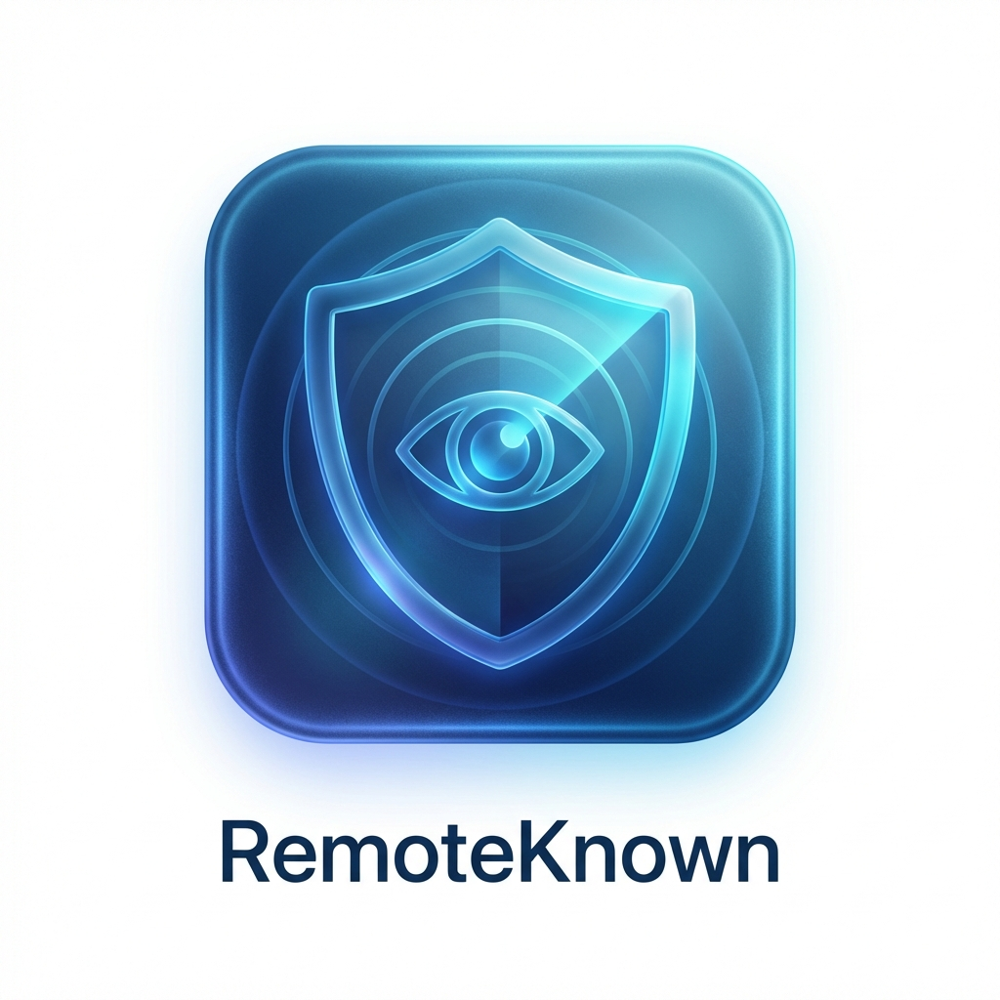

勾选要关注的远程工具；若你的远程软件不在列表里，点「添加远程工具」用快照录制自动识别。
请确保现在没有人正在远程你，然后点击下面的按钮记录当前进程基线。
基线已记录（0 个进程）。
现在请打开并连接那个远程软件，连上后回到这里点「完成对比」。
对比后这些进程是新出现的或连接数突增的，请选出那个远程工具：
直接编辑全部规则（含内置）。同一进程可以写多条规则（同一工具的不同版本特征，
toolName 保持一致即可，任一命中即判定为远程）。可用字段：
processName(必填) · toolName · remark(备注) ·
id(规则标识) · commandLineArgs[] ·
detectChildProcess · childProcessExcludeArgs[] ·
windowClass · windowTitle ·
tcpConnThreshold · useEstablishedOnly · udpConnThreshold
内置规则的改动会被保留、且不会被规则更新覆盖；删除内置规则行只会恢复其默认（如需停用请用上方「关注」开关），删除自定义工具行即彻底删除。

RemoteKnown
版本: 1.0.0 New
发现新版本:
保护您的隐私安全，防止未经授权的远程控制。
© 2025 RemoteKnown Team. All rights reserved.
| 开始时间 | 结束时间 | 持续时长 | 判定依据 |
|---|---|---|---|
| 加载中... | |||